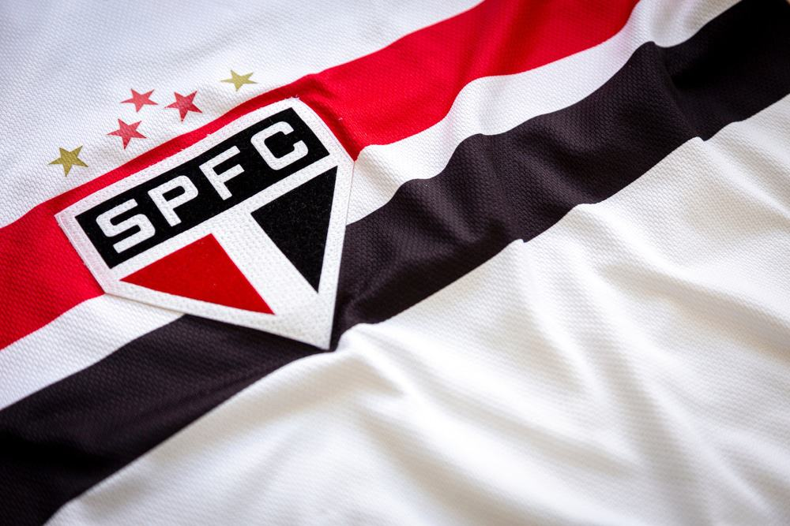

| Imagem | Descrição |
|---|---|
|  |
Bem-vindo ao São Paulo FC! Com uma rica história e uma paixão que transcende fronteiras, o São Paulo FC é um dos clubes mais renomados do futebol brasileiro. Fundado em 1930, o tricolor paulista é conhecido por sua tradição de excelência, conquistas marcantes e uma base de torcedores fervorosa. Seja bem-vindo ao coração do futebol! somos conhecidos pela nossa paixão pelo futebol e pela lealdade de nossa torcida. Nossa missão é continuar a excelência dentro e fora dos campos, sempre com o orgulho do tricolor paulista. |